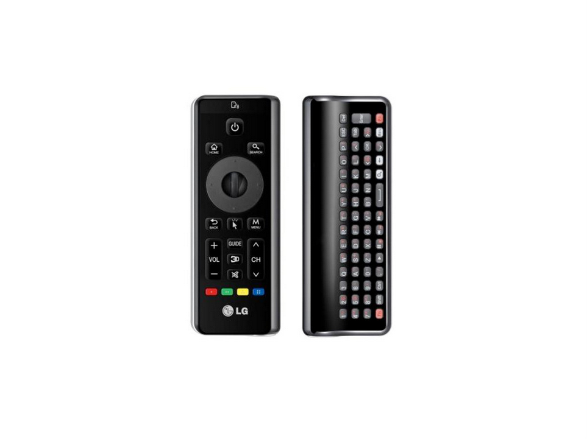

HTML5 Hybird Development
Created by
ChaiChunyan
/
@chaichunyan

More ...
browsers
smartphones
tablets
TVs
and More ...
How do ?
3种解决的方式
Native
webapp
Hybird
Native
优势
性能最佳
更加流程的动画
原生 API 调用
But
不足
不同的平台使用不同的开发语言
时间
成本
...
iOS应用还要经过漫长的审核发布
webapp
优势
单页应用
无须安装
广大web开发人员
But
不足
无法调用硬件API
有限的存储空间
性能不足
延迟、卡顿
...
Next
Hybird
目前主流的两种混合方案
跨平台解决方案
Native + HTML5
跨平台解决方案
PhoneGap
Inioc
Titanium
Native + HTML5
Native提供 JS 方法；
HTML5 通过 JS 同 Native 交互
Demo